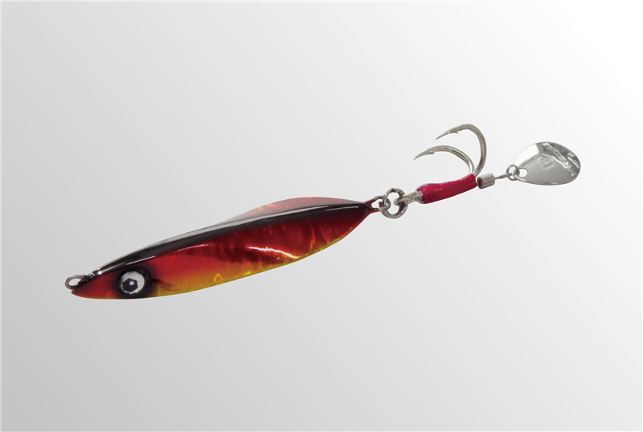
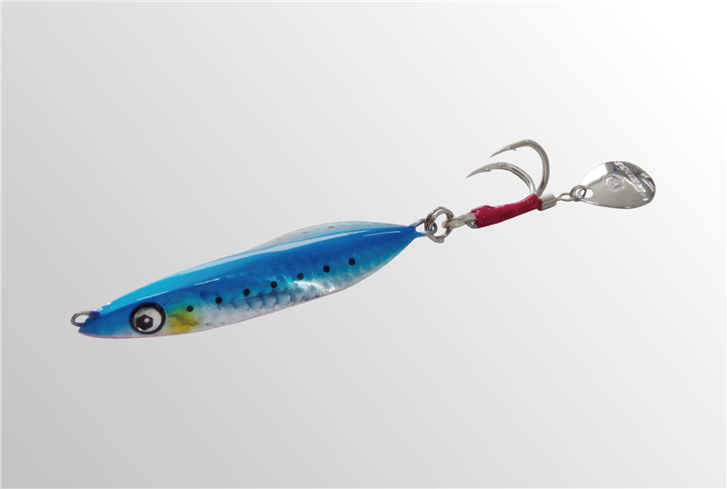
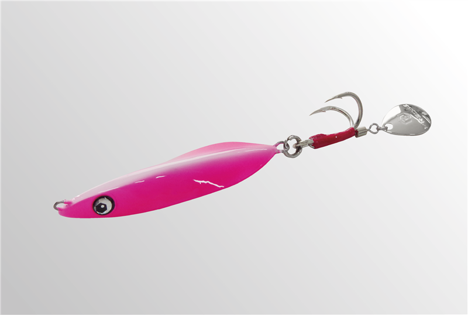
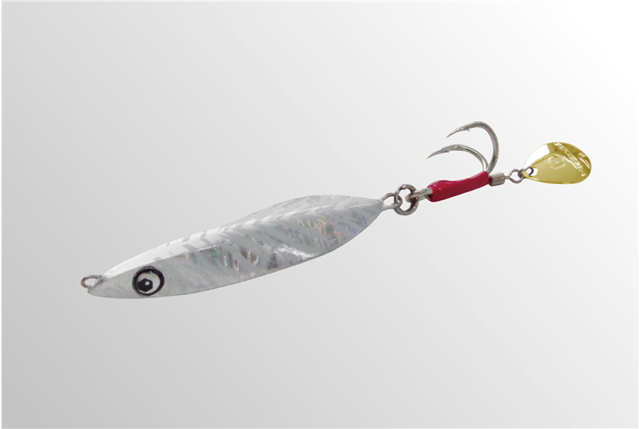

エッジブレード
（EDGE-BLADE）
エッジブレードはPREDGE（プレッジ）のブレードジグです。
ゆるみ止めナットの精密部品メーカー・冨士精密が手がけるソルトルアーブランドから登場したブレードジグ。浮き上がりを抑えた設計で早巻きでもレンジをキープでき、多面的なボディとブレードが光を乱反射して、青物やサワラに強くアピールします。

画像出典:PREDGE公式HP
スペック
- メーカー
- PREDGE（プレッジ）
- タイプ
- ブレードジグ
- 素材
- 鉛
- 重さ／全長
- 30g／61mm、40g／67mm、60g／76mm、80g／83mm（本体部分）
- ターゲット
- 青物・サワラ・サゴシなど
- 価格
- 1,100円（30g）〜1,400円（80g）（税抜）
- 発売
- 2026年
▼今すぐチェック
エッジブレードの特徴
早巻きでも浮き上がらず、狙ったレンジでフラッシングさせられるブレードジグ
-
浮き上がりを抑えたレンジキープ性能
ブレードジグは速く巻くほど浮き上がりやすくなりますが、エッジブレードは浮き上がりを抑えた設計。早巻きでも魚が泳いでいる層を丁寧にトレースできます。
-
多面的ボディとブレードの乱反射
面をいくつも持たせたボディと、テールのブレードが光を乱反射。巻いているときだけでなく、フォール中も強いフラッシングでアピールします。
-
30〜80gの4ウエイト
堤防やサーフからのショアゲームで使いやすい30g・40gから、ボートや水深のある場所で使える60g・80gまで揃っています。
エッジブレードの使い方
キャストしてボトムまで沈め、着底したらすぐに巻き始めて、一定スピードの早巻きで探るのが基本。浮き上がりにくいので、底付近から中層までを早巻きのまま長く引けます。
フォールでもフラッシングするので、反応がないときは巻きの途中でストップを入れ、フォールで食わせの間を作りましょう。
エッジブレードの得意な状況
堤防・サーフ・磯からのショアジギングで青物やサゴシを狙うとき、ボートからのサワラキャスティング。潮が速くてほかのブレードジグが浮き上がってしまう場面や、ボトム付近を早巻きで通したいときに強いブレードジグです。
潮が速くても浮き上がりにくいので、ボトム付近の青物やサワラが釣れる場面が増えます。
ワンポイント
ショアからの青物狙いなら30g・40g、ボートのサワラや水深のある場所なら60g・80gが目安。カラーはグロー系やケイムラ系も揃っているので、朝マヅメはグロー、日中はフラッシュシルバー、とローテーションするのがおすすめです。
サワラ狙いならワイヤーリーダーも
サワラ・サゴシの鋭い歯でリーダーごとジグを切られないように、ジグの前に30cm以内の短いワイヤーリーダーを付けておくと安心です。カッターが少ない日は外して、状況に合わせて使い分けましょう。くわしくはサワラのブレードジギング完全ガイドで紹介しています。

重さの使い分け
| 重さ | 全長 | 使いどころ |
|---|---|---|
| 30g | 61mm | 堤防・サーフのショアジギング。小さいベイトのときに |
| 40g | 67mm | ショアの青物・サゴシ狙いの基準 |
| 60g | 76mm | ボートのサワラキャスティングや、水深のある場所に |
| 80g | 83mm | 潮が速い場所や、深いレンジを狙うときに |
全長は本体部分の長さで、フックは含みません。
人気カラー
全10色のラインナップから4色を紹介します（カラー名は公式の表記のまま）。

アカキン定番のアカキン。朝夕のマヅメ時や、濁りのある日に。

ブルピンイワシ青物の定番カラー。イワシがベイトのときや、晴れた日の澄み潮に。

グローエッジピンクエッジにグローを入れたピンク。夜明け前や、深いレンジでのアピールに。

フラッシュシルバーシルバーのフラッシングを生かしたナチュラル系。日中の澄み潮に。
画像出典:PREDGE公式HP
▼今すぐチェック
エッジブレードに似ているルアー
-
 メタルマジックスリム
アクアウェーブ
詳細はこちら＞
メタルマジックスリム
アクアウェーブ
詳細はこちら＞
30〜60gのスピンテールジグ。同じくらいの重さで、細身のシルエットで食わせたいときに。
-
 ビッグバッカー Eブレード
ジャッカル
詳細はこちら＞
ビッグバッカー Eブレード
ジャッカル
詳細はこちら＞
ただ巻きで使える青物用ブレードジグ。堤防からの青物・サゴシ狙いのローテーションに。
-
 トレイルジグ
キャラック
詳細はこちら＞
トレイルジグ
キャラック
詳細はこちら＞
40〜100gのブレードジグ。ボートのサワラ狙いで、もっと重いウエイトが欲しいときに。